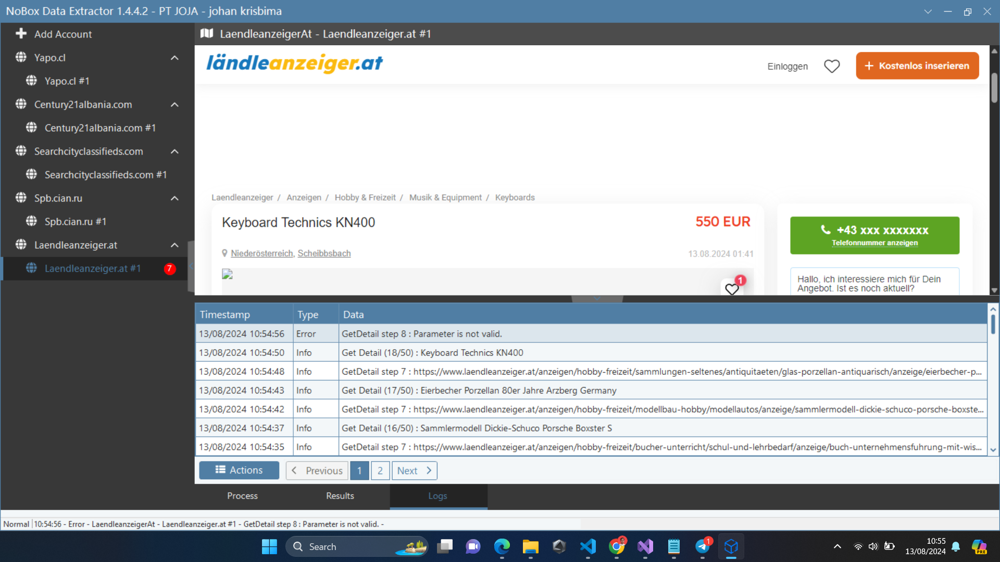

Project: Web Scraping for Nobox Extractor App – PT Universal Big Data
Pengembangan dan pemeliharaan aplikasi desktop untuk ekstraksi data publik dari berbagai situs e-commerce global menggunakan teknik web scraping serta integrasi cloud platform Nobox AI.
Ringkasan Proyek (Berdasarkan CV Resmi)
- Membangun dan memelihara aplikasi otomasi Nobox Extractor untuk mengekstraksi data publik lintas platform e-commerce global dengan tingkat keandalan tinggi.
- Mengimplementasikan fitur-fitur kritikal, seperti penanganan pagination kompleks, validasi kueri pencarian, dan standardisasi format data untuk meminimalisasi anomali serta meningkatkan akurasi data.
- Menghubungkan integrasi data ke platform Nobox AI serta melakukan pengujian dan penalaan performa (performance tuning) secara rutin guna menjaga reliabilitas aplikasi desktop.
1. Latar Belakang Masalah & Kebutuhan Data
Model kecerdasan buatan Nobox AI membutuhkan asupan data tren pasar yang segar, luas, dan terstruktur setiap harinya. Pengumpulan data secara manual tidak realistis untuk skala ratusan ribu produk. Beberapa tantangan teknis utama yang harus dipecahkan meliputi:
- Volatilitas Struktur HTML: Layout situs e-commerce sering mengalami pembaruan selector CSS/DOM, yang rawan mematahkan script scraping konvensional.
- Kecepatan vs Pemblokiran (Rate Limiting): Menjalankan proses ekstraksi berkecepatan tinggi tanpa membebani server target dan tanpa terblokir oleh mekanisme proteksi bot (Cloudflare / CAPTCHA).
- Manajemen Memori & Kestabilan Desktop: Aplikasi harus mampu berjalan selama berhari-hari nonstop tanpa memory leak dan tanpa mengalami freeze antarmuka (UI thread hanging).
2. Solusi Teknis & Fitur Unggulan
Untuk mengatasi kendala di atas, saya merancang arsitektur aplikasi modular dengan pemisahan antara antarmuka pengguna (UI), mesin ekstraktor asynchronous, dan pipeline persistence database:
Multi-Threaded Asynchronous Engine
C# Async / Await & Task Parallel LibraryMemisahkan thread rendering UI dari thread HTTP crawler sehingga antarmuka tetap responsif 60 FPS meskipun sedang mengekstrak ribuan baris data secara simultan.
- Pengaturan konkurensi dinamis (configurable thread pool limit).
- Distribusi antrian link target menggunakan thread-safe concurrent queue.
- Mekanisme auto-pause dan resume tanpa kehilangan status progres crawling.
Smart DOM Parser & Sanitizer
Normalisasi & Validasi Data OtomatisEkstraksi atribut esensial produk: judul listing, harga mata uang lokal/internasional, rating, lokasi seller, nomor kontak, serta deskripsi spesifikasi.
- Sistem fallback selector jika kelas CSS target mengalami modifikasi ringan.
- Pembersihan karakter regex, konversi format harga ke nilai integer baku.
- Filter deduplikasi instan berdasarkan hash unik kombinasi URL dan SKU produk.
Bulk Pipeline Sync ke Nobox AI
MySQL Batch Inserts & Cloud IntegrationAlih-alih melakukan query insert satu-per-satu yang membebani I/O, saya mengimplementasikan sistem batching buffer untuk sinkronisasi massal.
- Batch insert 500 records per transaksi database untuk efisiensi tinggi.
- Koneksi terenkripsi ke database staging dan production cloud Nobox AI.
- Export opsi darurat ke format Excel / CSV jika terjadi kendala jaringan internet.
Anti-Throttling & Proxy Support
Ketahanan Sistem & Kestabilan CrawlingMeniru pola browsing manusia melalui variasi user-agent acak, random request delay interval, dan rotasi proxy HTTP/SOCKS5.
- Rotasi User-Agent realistis yang diperbarui secara periodik.
- Exponential backoff retry saat mendeteksi status kode HTTP 429 atau 503.
- Peringatan otomatis jika koneksi jaringan terputus di tengah jalan.
3. Dokumentasi Tampilan Aplikasi Nobox Extractor
Berikut adalah tampilan aplikasi desktop Nobox Extractor saat menjalankan proses ekstraksi data produk e-commerce:


4. Dampak & Hasil Nyata (Impact)
Pengembangan aplikasi desktop Nobox Extractor memberikan kontribusi signifikan terhadap efisiensi pengumpulan data kecerdasan buatan:
5. Pembelajaran Utama (Key Takeaways)
Mengembangkan Nobox Extractor di PT Universal Big Data memberikan wawasan mendalam mengenai teknik web scraping modern, pemrosesan data asinkronus skala besar, dan arsitektur desktop multithreading.
Pelajaran paling bernilai adalah merancang kode ekstraksi yang tangguh (fault-tolerant): selalu mengantisipasi perubahan struktur DOM situs pihak ketiga, menangani kegagalan jaringan secara anggun (graceful degradation), dan menjaga kebersihan data sebelum disimpan ke database inti.